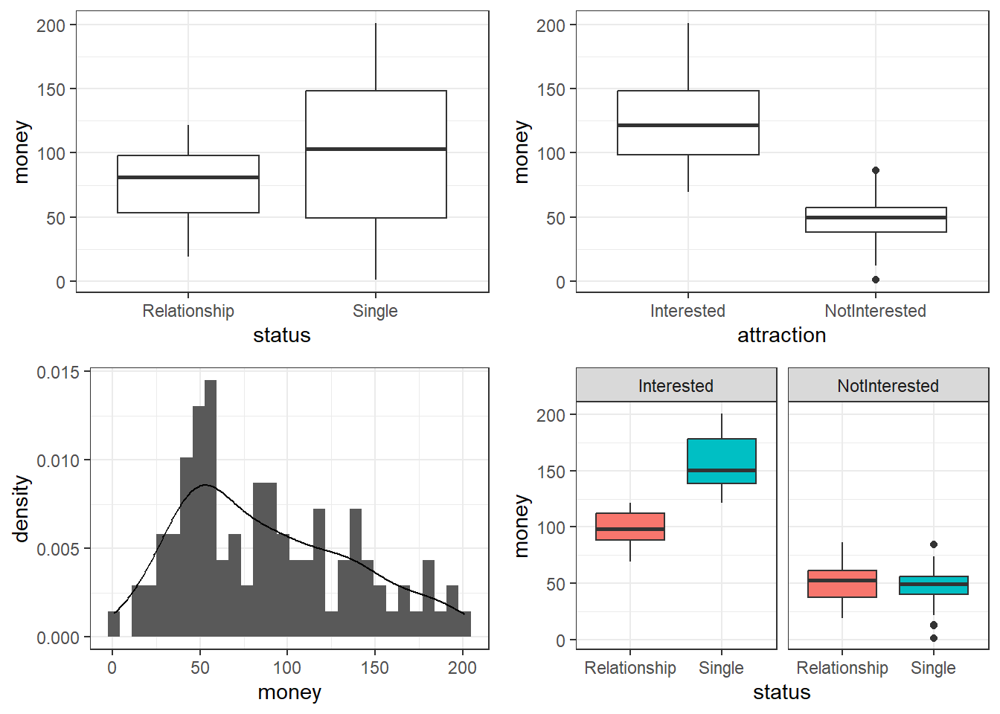
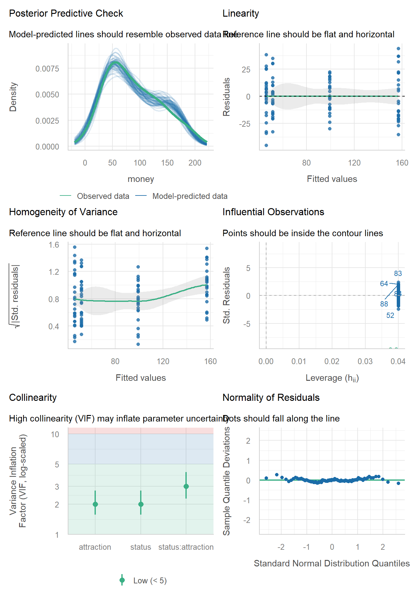
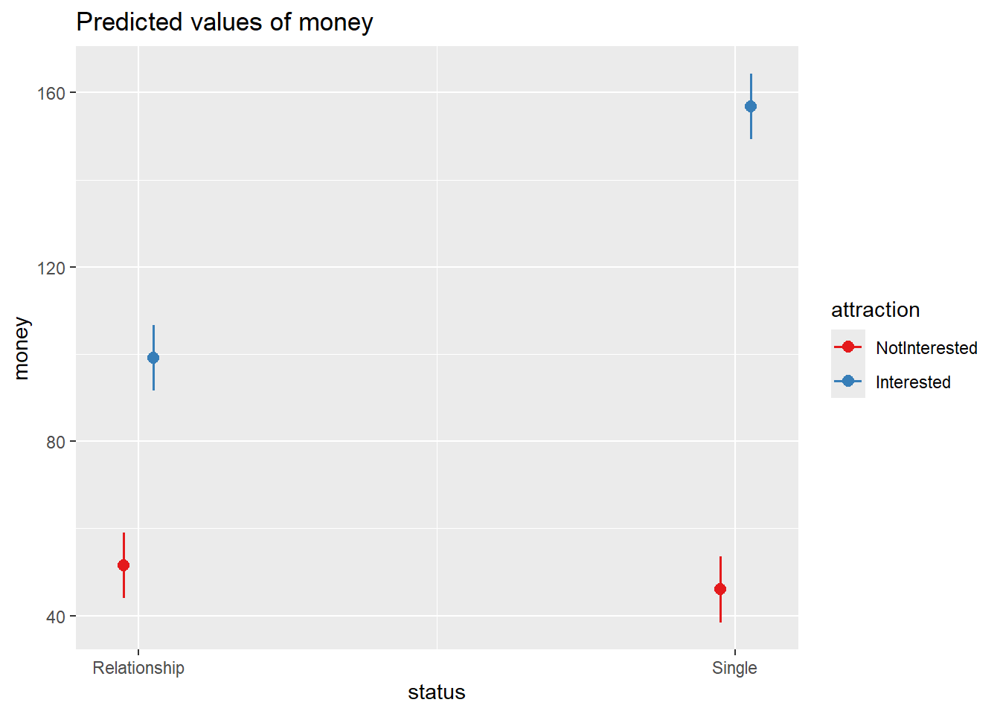

# load data
mlrdata <- base::readRDS(url("https://slcladal.github.io/data/mld.rda", "rb"))10 Multiple Linear Regression
What This Session Covers
This session extends linear regression to multiple predictors - including interactions between them.
- The basic principle - modeling an outcome as a function of several predictors simultaneously
- Interactions - when the effect of one predictor depends on another
- Model fitting - finding a minimal adequate model via model comparison (AIC)
- Model diagnostics -
check_model(), collinearity (VIFs), and influential observations - Sample size considerations, effect visualization, and reporting standards
This tutorial introduces regression analysis (also called regression modeling). Regression models are among the most widely used quantitative methods in the language sciences to assess if and how predictors (variables or interactions between variables) correlate with a certain response.
Regression models are so popular because they can
incorporate many predictors in a single model (multivariate: allows to test the impact of one predictor while the impact of (all) other predictors is controlled for)
extremely flexible and and can be fitted to different types of predictors and dependent variables
provide output that can be easily interpreted
conceptually relative simple and not overly complex from a mathematical perspective
The major difference between these types of models is that they take different types of dependent variables: linear regressions take numeric, logistic regressions take nominal variables, ordinal regressions take ordinal variables, and Poisson regressions take dependent variables that reflect counts of (rare) events.
10.1 The Basic Principle
In contrast to simple linear regression, which estimates the effect of a single predictor, multiple linear regression estimates the effect of various predictors simultaneously (see the equation below).
\[\begin{equation} f_{(x)} = \alpha + \beta_{1}x_{i} + \beta_{2}x_{i+1} + \dots + \beta_{n}x_{i+n} + \epsilon \end{equation}\]
The model diagnostics we are dealing with here are partly identical to the diagnostic methods for simple linear regression. Because of this overlap, diagnostics will only be described in more detail if they have not been described in the section on simple linear regression.
10.2 Example: Gifts and Availability
Key concept: What is an interaction?
An interaction means that the effect of one predictor on the outcome depends on the value of another predictor. Example: attraction may increase with the money spent on gifts - but only for emotionally available partners; for unavailable partners, spending has no effect. Neither predictor alone captures this: the effect of money differs across levels of availability. In R, interactions are specified with * (e.g. attraction ~ money * status estimates both main effects and their interaction). When an interaction is significant, the main effects involved in it can no longer be interpreted in isolation.
The example we will go through here is taken from Field, Miles, and Field (2012). In this example, the research question is if the money that men spend on presents for women depends on the women’s attractiveness and their relationship status. To answer this research question, we will implement a multiple linear regression and start by loading the data and inspect its structure and properties.
status | attraction | money |
|---|---|---|
Relationship | NotInterested | 86.33 |
Relationship | NotInterested | 45.58 |
Relationship | NotInterested | 68.43 |
Relationship | NotInterested | 52.93 |
Relationship | NotInterested | 61.86 |
Relationship | NotInterested | 48.47 |
Relationship | NotInterested | 32.79 |
Relationship | NotInterested | 35.91 |
Relationship | NotInterested | 30.98 |
Relationship | NotInterested | 44.82 |
Relationship | NotInterested | 35.05 |
Relationship | NotInterested | 64.49 |
Relationship | NotInterested | 54.50 |
Relationship | NotInterested | 61.48 |
Relationship | NotInterested | 55.51 |
The data set consist of three variables stored in three columns. The first column contains the relationship status of the present receiver (in this study, this were women), the second whether the present givers (in this study this were men) are interested in the present receiver, and the third column represents the money spend on the present. The data set represents 100 cases and the mean amount of money spend on a present is 88.38 dollars. In a next step, we visualize the data to get a more detailed impression of the relationships between variables.
# create plots
p1 <- ggplot(mlrdata, aes(status, money)) +
geom_boxplot() +
theme_bw()
# plot 2
p2 <- ggplot(mlrdata, aes(attraction, money)) +
geom_boxplot() +
theme_bw()
# plot 3
p3 <- ggplot(mlrdata, aes(x = money)) +
geom_histogram(aes(y=..density..)) +
theme_bw() +
geom_density()
# plot 4
p4 <- ggplot(mlrdata, aes(status, money)) +
geom_boxplot(aes(fill = factor(status))) +
facet_wrap(~ attraction) +
guides(fill = FALSE) +
theme_bw()
# show plots
gridExtra::grid.arrange(grobs = list(p1, p2, p3, p4), widths = c(1, 1), layout_matrix = rbind(c(1, 2), c(3, 4)))
The upper left figure consists of a boxplot which shows how much money was spent by relationship status. The figure suggests that men spend more on women if they are not in a relationship. The next figure shows the relationship between the money spend on presents and whether or not the men were interested in the women.
The boxplot in the upper right panel suggests that men spend substantially more on women if the men are interested in them. The next figure depicts the distribution of the amounts of money spend on the presents for the women. In addition, the figure indicates the existence of two outliers (dots in the boxplot)
The histogram in the lower left panel shows that, although the mean amount of money spent on presents is 88.38 dollars, the distribution peaks around 50 dollars indicating that on average, men spend about 50 dollars on presents. Finally, we will plot the amount of money spend on presents against relationship status by attraction in order to check whether the money spent on presents is affected by an interaction between attraction and relationship status.
The boxplot in the lower right panel confirms the existence of an interaction (a non-additive term) as men only spend more money on women if the men single and they are interested in the women. If men are not interested in the women, then the relationship has no effect as they spend an equal amount of money on the women regardless of whether they are in a relationship or not.
We will now start to implement the regression model. In a first step, we create a saturated model that contain all possible predictors (main effects and interactions).
m1.mlr = lm( # generate lm regression object
money ~ attraction*status, # def. regression formula
data = mlrdata) # def. dataAfter generating the saturated models we can now start with the model fitting. Model fitting refers to a process that aims at find the model that explains a maximum of variance with a minimum of predictors (see Field, Miles, and Field 2012, 318). Model fitting is therefore based on the principle of parsimony which is related to Occam’s razor according to which explanations that require fewer assumptions are more likely to be true.
10.3 Model Fitting
Model fitting means that we check what of the predictors should be included in the model and what predictors do not have any impact on the outcome and thus should not be part of the model (because they merely add noise to the data.
In this example, we use the glmulti function to find the model with the lowest AIC (Akaike Information Criterion) as the criterion to find the model with the best fit: the lower the AIC value, the better the balance between explained variance and the number of predictors. AIC values can and should only be compared for models that are fit on the same data set with the same (number of) cases (LL stands for logged likelihood or LogLikelihood and k represents the number of predictors in the model (including the intercept); the LL represents a measure of how good the model fits the data).
\[\begin{equation} Akaike Information Criterion (AIC) = -2LL + 2k \end{equation}\]
library(glmulti)
mfit <- glmulti(money ~ attraction + status, data = mlrdata, crit = aic)Initialization...
TASK: Exhaustive screening of candidate set.
Fitting...
Completed.summary(mfit)$name
[1] "glmulti.analysis"
$method
[1] "h"
$fitting
[1] "glm"
$crit
[1] "aic"
$level
[1] 2
$marginality
[1] FALSE
$confsetsize
[1] 100
$bestic
[1] 878.3089
$icvalues
[1] 878.3089 878.3089 878.3089 878.3089 930.6519 953.8269 1057.8180
[8] 1063.3911
$bestmodel
[1] "money ~ 1 + status:attraction"
$modelweights
[1] 2.500000e-01 2.500000e-01 2.500000e-01 2.500000e-01 1.075929e-12
[6] 9.986248e-18 2.618317e-40 1.613778e-41
$includeobjects
[1] TRUEThe glmulti function reports money ~ 1 + status:attraction as the best model. However, if a variable is part of a significant interaction, we also need to include the main effect which means that our best model is money ~ 1 + status + attraction + status:attraction, or, simplified: money ~ status * attraction (which is the same as the previous formula). The saturated model is thus also the final minimal adequate model, i.e. the model with the best fit and the lowest number of predictors. We will now inspect the final minimal model and go over the model report.
m2.mlr = lm( # generate lm regression object
money ~ status * attraction, # def. regression formula, x1 * x2 = x1 + x2 + x1:x2
data = mlrdata) # def. data
# inspect final minimal model
summary(m2.mlr)
Call:
lm(formula = money ~ status * attraction, data = mlrdata)
Residuals:
Min 1Q Median 3Q Max
-45.08 -14.26 0.46 11.93 44.14
Coefficients:
Estimate Std. Error t value Pr(>|t|)
(Intercept) 99.155 3.795 26.131 < 2e-16 ***
statusSingle 57.693 5.366 10.751 < 2e-16 ***
attractionNotInterested -47.663 5.366 -8.882 3.75e-14 ***
statusSingle:attractionNotInterested -63.179 7.589 -8.325 5.81e-13 ***
---
Signif. codes: 0 '***' 0.001 '**' 0.01 '*' 0.05 '.' 0.1 ' ' 1
Residual standard error: 18.97 on 96 degrees of freedom
Multiple R-squared: 0.852, Adjusted R-squared: 0.8474
F-statistic: 184.3 on 3 and 96 DF, p-value: < 2.2e-16The first element of the report is called Call and it reports the regression formula of the model. Then, the report provides the residual distribution (the range, median and quartiles of the residuals) which allows drawing inferences about the distribution of differences between observed and expected values. If the residuals are distributed non-normally, then this is a strong indicator that the model is unstable and unreliable because mathematical assumptions on which the model is based are violated.
Next, the model summary reports the most important part: a table with model statistics of the fixed-effects structure of the model. The table contains the estimates (coefficients of the predictors), standard errors, t-values, and the p-values which show whether a predictor significantly correlates with the dependent variable that the model investigates.
All main effects (status and attraction) as well as the interaction between status and attraction is reported as being significantly correlated with the dependent variable (money). An interaction occurs if a correlation between the dependent variable and a predictor is affected by another predictor.
The top most term is called intercept and has a value of 99.15 which represents the base estimate to which all other estimates refer. To exemplify what this means, let us consider what the model would predict a man would spend on a present if he is interested in a woman but she is in a relationship. The amount he would spend (based on the model would be 99.15 dollars (which is the intercept). This means that the intercept represents the predicted value if all predictors take the base or reference level. And since being in relationship but being interested are the case, and because the interaction does not apply, the predicted value in our example is exactly the intercept (see below).
#intercept Single NotInterested Single:NotInterested
99.15 + 57.69 + 0 + 0 # 156.8 single + interested
99.15 + 57.69 - 47.66 - 63.18 # 46.00 single + not interested
99.15 - 0 + 0 - 0 # 99.15 relationship + interested
99.15 - 0 - 47.66 - 0 # 51.49 relationship + not interestedNow, let us consider what a man would spend if she is in a relationship and he is not attracted to the women. In that case, the model predicts that the man would spend only 51.49 dollars on a present: the intercept (99.15) minus 47.66 because the man is not interested (and no additional subtraction because the interaction does not apply).
We can derive the same results easier using the predict function.
# make prediction based on the model for original data
prediction <- predict(m2.mlr, newdata = mlrdata)
# inspect predictions
table(round(prediction,2))
46.01 51.49 99.15 156.85
25 25 25 25 Below the table of coefficients, the regression summary reports model statistics that provide information about how well the model performs. The difference between the values and the values in the coefficients table is that the model statistics refer to the model as a whole rather than focusing on individual predictors.
The multiple R2-value is a measure of how much variance the model explains. A multiple R2-value of 0 would inform us that the model does not explain any variance while a value of .852 mean that the model explains 85.2 percent of the variance. A value of 1 would inform us that the model explains 100 percent of the variance and that the predictions of the model match the observed values perfectly. Multiplying the multiple R2-value thus provides the percentage of explained variance.
The adjusted R2-value considers the amount of explained variance in light of the number of predictors in the model (it is thus somewhat similar to the AIC and BIC) and informs about how well the model would perform if it were applied to the population that the sample is drawn from. Ideally, the difference between multiple and adjusted R2-value should be very small as this means that the model is not overfitted. If, however, the difference between multiple and adjusted R2-value is substantial, then this would strongly suggest that the model is unstable and overfitted to the data while being inadequate for drawing inferences about the population. Differences between multiple and adjusted R2-values indicate that the data contains outliers that cause the distribution of the data on which the model is based to differ from the distributions that the model mathematically requires to provide reliable estimates. The difference between multiple and adjusted R2-value in our model is very small (85.2-84.7=.05) and should not cause concern.
Now, we compare the final minimal adequate model to the base-line model to test whether then final model significantly outperforms the baseline model.
# compare baseline- and minimal adequate model
m0.mlr <- lm(money ~ 1, data = mlrdata)
anova(m0.mlr, m2.mlr)Analysis of Variance Table
Model 1: money ~ 1
Model 2: money ~ status * attraction
Res.Df RSS Df Sum of Sq F Pr(>F)
1 99 233562
2 96 34558 3 199005 184.28 < 2.2e-16 ***
---
Signif. codes: 0 '***' 0.001 '**' 0.01 '*' 0.05 '.' 0.1 ' ' 1The comparison between the two models confirms that the minimal adequate model performs significantly better (makes significantly more accurate estimates of the outcome variable) compared with the baseline model.
10.4 Model Diagnostics
Key concept: What is (multi)collinearity?
Collinearity arises when predictors are correlated with each other - when one predictor can be (partly) predicted from the others. The model then cannot cleanly separate their individual contributions: coefficient estimates become unstable, standard errors inflate, and interpretation becomes unreliable, even though the model’s overall predictions may be fine. Collinearity is quantified by variance inflation factors (VIFs): values above 10 (conservatively: above 5) signal a problem. Remedies include removing or combining correlated predictors. Note: elevated VIFs for terms involved in an interaction are expected and unproblematic.
After implementing the multiple regression, we now need to check the model assumptions and look for influential observations, i.e. data points whose removal would disproportionately change the model fit. As in the section on simple linear regression, we use the check_model function from the performance package (Lüdecke et al. 2021) to generate the diagnostic plots (have a look at the explanations of what to look for and how to interpret these diagnostic plots in the section on simple linear regression).
# generate diagnostic plots
performance::check_model(m2.mlr)
Because we are now dealing with more than one predictor, the panel includes an additional plot: the Collinearity panel. This panel shows the variance inflation factor (VIF) for each model term, which quantifies how strongly a predictor can be predicted from the other predictors in the model. High collinearity (VIFs above 10; some scholars use the more conservative threshold of 5) is problematic because it renders the coefficient estimates unstable and their interpretation unreliable. We can also extract the VIFs directly, as shown below.
# check collinearity
performance::check_collinearity(m2.mlr)# Check for Multicollinearity
Low Correlation
Term VIF VIF 95% CI adj. VIF Tolerance Tolerance 95% CI
status 2.00 [1.58, 2.73] 1.41 0.50 [0.37, 0.63]
attraction 2.00 [1.58, 2.73] 1.41 0.50 [0.37, 0.63]
status:attraction 3.00 [2.26, 4.16] 1.73 0.33 [0.24, 0.44]A note on VIFs in models with interactions: elevated VIFs of terms involved in an interaction are expected (a predictor and an interaction containing that predictor are necessarily correlated) and are not by themselves a cause for concern.
The plots do not show severe problems such as funnel-shaped patterns in the homogeneity-of-variance panel or drastic deviations from the reference line in the normality panel. To make sure that no data points over-proportionately impact the model fit, we formally check for influential observations based on Cook’s distance.
# check for influential observations
performance::check_outliers(m2.mlr)OK: No outliers detected.
- Based on the following method and threshold: cook (0.5).
- For variable: (Whole model)The diagnostics indicate that no data points overly affect the results (no observation exceeds the Cook’s distance threshold) and we can thus proceed with the interpretation of the model.
10.5 A Word about Sample Size
One common issue when doing null-hypothesis significance testing is sample size (which is related to the probability of \(\beta\)-errors). Remember, \(\beta\)-errors (or beta errors) mean overlooking a significant effect typically because the sample size is too low. The probability of a \(\beta\)-error ranges between 0 and 1, where lower values are better.
Despite there being no ultimate rule of thumb, Field, Miles, and Field (2012, 273–75), based on Green (1991), provide data-driven suggestions for the minimal size of data required for regression models that aim to find medium sized effects (k = number of predictors; categorical variables with more than two levels should be transformed into dummy variables):
If one is only interested in the effect of specific variables, then the sample size should be at least 104 + k (k = number of predictors in model).
10.6 Visualizing effects
Now, we visualize the effects of the predictors reported as being significant.
# tabulate model results
sjPlot::plot_model(m2.mlr, type = "pred", terms = c("status", "attraction"))
10.7 Reporting Results
As a last step, we summarize the results of the regression analysis.
# tabulate model results
sjPlot::tab_model(m2.mlr)| money | |||
| Predictors | Estimates | CI | p |
| (Intercept) | 99.15 | 91.62 – 106.69 | <0.001 |
| status [Single] | 57.69 | 47.04 – 68.34 | <0.001 |
| attraction [NotInterested] |
-47.66 | -58.31 – -37.01 | <0.001 |
| status [Single] × attraction [NotInterested] |
-63.18 | -78.24 – -48.11 | <0.001 |
| Observations | 100 | ||
| R2 / R2 adjusted | 0.852 / 0.847 | ||
Additionally, we can inspect the summary of the regression model as shown below to extract additional information. We can use the reports package (Makowski et al. 2021) to summarize the analysis.
Although Field, Miles, and Field (2012) suggest that the main effects of the predictors involved in the interaction should not be interpreted, they are interpreted here to illustrate how the results of a multiple linear regression can be reported.
report::report(m2.mlr)We fitted a linear model (estimated using OLS) to predict money with status and
attraction (formula: money ~ status * attraction). The model explains a
statistically significant and substantial proportion of variance (R2 = 0.85,
F(3, 96) = 184.28, p < .001, adj. R2 = 0.85). The model's intercept,
corresponding to status = Relationship and attraction = Interested, is at 99.15
(95% CI [91.62, 106.69], t(96) = 26.13, p < .001). Within this model:
- The effect of status [Single] is statistically significant and positive (beta
= 57.69, 95% CI [47.04, 68.34], t(96) = 10.75, p < .001; Std. beta = 1.19, 95%
CI [0.97, 1.41])
- The effect of attraction [NotInterested] is statistically significant and
negative (beta = -47.66, 95% CI [-58.31, -37.01], t(96) = -8.88, p < .001; Std.
beta = -0.98, 95% CI [-1.20, -0.76])
- The effect of status [Single] × attraction [NotInterested] is statistically
significant and negative (beta = -63.18, 95% CI [-78.24, -48.11], t(96) =
-8.32, p < .001; Std. beta = -1.30, 95% CI [-1.61, -0.99])
Standardized parameters were obtained by fitting the model on a standardized
version of the dataset. 95% Confidence Intervals (CIs) and p-values were
computed using a Wald t-distribution approximation.We can use the output of the report function to write up a final report:
A multiple linear regression was fitted to the data using an automated AIC-based (Akaike’s Information Criterion) procedure. The model fitting arrived at a final minimal model.
The model explains a statistically significant and substantial proportion of variance (R2 = 0.85, F(3, 96) = 184.28, p < .001, adj. R2 = 0.85). The model’s intercept, corresponding to status = Relationship, is at 99.15 ([91.62, 106.69], t(96) = 26.13, p < .001).
The effect of status [Single] is statistically significant and positive (beta = 57.69 [47.04, 68.34], t(96) = 10.75, p < .001; Std. beta = 1.19 [0.97, 1.41]) which means that men spend 57.69 AUD more on gifts for women, if the women are not in a relationship.
The effect of attraction [NotInterested] is statistically significant and negative (beta = -47.66 [-58.31, -37.01], t(96) = -8.88, p < .001; Std. beta = -0.98 [-1.20, -0.76]) which means that men spend 47.66 AUD less on gifts for women if the men are not interested in the women.
The interaction effect of attraction [NotInterested] on status [Single] is statistically significant and negative (beta = -63.18 [-78.24, -48.11], t(96) = -8.32, p < .001; Std. beta = -1.30 [-1.61, -0.99]) which means that if men are not interested in the women and the women are single, men spend 63.18 AUD less on presents.
Exercises: Multiple Linear Regression
Q1. A model of L2 fluency finds an interaction between practice time and anxiety: practice improves fluency for low-anxiety learners but not for high-anxiety learners. What does this interaction mean for interpretation?
Q2. In your model, two predictors have VIF values of 12. What does this indicate?
Q3. Model A (3 predictors) has an AIC of 210; Model B (6 predictors) has an AIC of 214. Which model should you prefer?
Field, Andy, Jeremy Miles, and Zoe Field. 2012. Discovering Statistics Using r. Sage.
Green, Samuel B. 1991. “How Many Subjects Does It Take to Do a Regression Analysis.” Multivariate Behavioral Research 26 (3): 499–510.
Lüdecke, Daniel, Mattan S. Ben-Shachar, Indrajeet Patil, Philip Waggoner, and Dominique Makowski. 2021. “Performance: An R Package for Assessment, Comparison and Testing of Statistical Models.” Journal of Open Source Software 6 (60): 3139. https://doi.org/10.21105/joss.03139.
Makowski, Dominique, Mattan S. Ben-Shachar, Indrajeet Patil, and Daniel Lüdecke. 2021. “Automated Results Reporting as a Practical Tool to Improve Reproducibility and Methodological Best Practices Adoption.” CRAN. https://github.com/easystats/report.